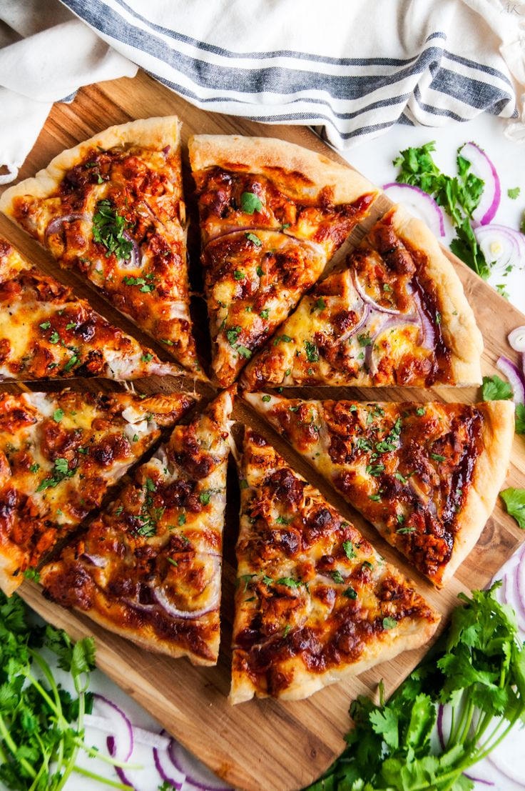

Retour à l'accueil
PIZZA

Description
La pizza est un plat d'origine italienne composé d'une pâte à pain garnie de sauce tomate, de fromage et de divers ingrédients tels que des légumes, de la viande ou des fruits de mer. Elle est cuite au four jusqu'à ce que la pâte soit croustillante et le fromage fondu.
Ingrédients
- 1 pâte à pizza
- 200g de sauce tomate
- 150g de mozzarella râpée
- 100g de pepperoni (optionnel)
- 1 poivron rouge, tranché
- 1 oignon, tranché
- Olives noires (optionnel)
- Origan séché
Instructions
- Préchauffez votre four à 220°C (425°F).
- Étalez la pâte à pizza sur une plaque de cuisson recouverte de papier sulfurisé.
- Étalez la sauce tomate uniformément sur la pâte.
- Saupoudrez la mozzarella râpée sur la sauce tomate.
- Ajoutez les tranches de pepperoni, les poivrons, les oignons et les olives selon vos préférences.
- Saupoudrez d'origan séché pour plus de saveur.
- Enfournez pendant 15-20 minutes, ou jusqu'à ce que la croûte soit dorée et le fromage fondu et bouillonnant.
- Laissez refroidir légèrement avant de couper en parts et servir chaud.